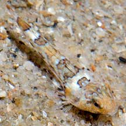
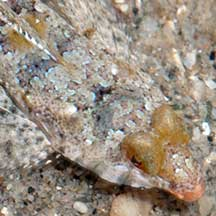
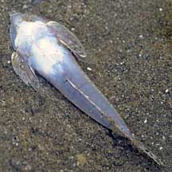

|
|
| fishes text index | photo index |
| Phylum Chordata > Subphylum Vertebrate > fishes |
| Dragonets Family Callionymidae updated Sep 2020 Where seen? Divers are more familiar with colourful dragonets seen on the reefs. But different kinds are also seen on the intertidal. These small fishes are bottom dwellers and generally found on sand or mud near reefs. When resting, most are buried in the sand. What are dragonets? Dragonets belong to Family Callionymidae. According to FishBase: the family has 18 genera and 130 species. They are found mainly in the Indo-West Pacific. Features: Those seen about 3-5cm, grows to about 10cm. These fishes are bottom-dwellers. Instead of scales, the body is covered in a tough skin and usually coated with mucous that has a bad taste and smell. So they are sometimes also called stinkfishes. The gill opening is just a small hole, usually on the upper side of the head, with a strong spine near it. Most of these fishes are well camouflaged but some species can be quite colourful. In many species the males and females appear different. The males usually have an enlarged first dorsal fin that is colourful with intricate patterns. |
 A tiny one about 1cm long. Changi, Aug 12 Photo shared by Marcus Ng on flickr. |
 Downward pointing mouth. Tanah Merah, Oct 09 |
 Underside of a dead one. Changi, Oct 09 |
| Sometimes
mistaken for flatheads (Family Platycephalidae). Here's more on how
to tell apart fish with flat heads. What do they eat? They pick off small animals from the surface with their pointed, downward facing mouth. Human uses: Some colourful species (Synchiropus sp.) are popular in the live aquarium trade. Unfortunately, they do poorly in captivity as they are difficult to feed since they only eat tiny animals. |
| Some Dragonets on Singapore shores |
| Family
Callionymidae recorded for Singapore from Ng, H. H., 2012. The dragonets of Singapore (Actinopterygii: Perciformes: Callionymidae). +Other additions (Singapore Biodiversity Records, etc.)
|
Links
References
|